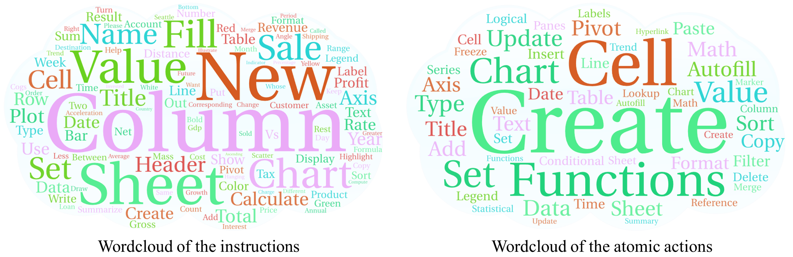
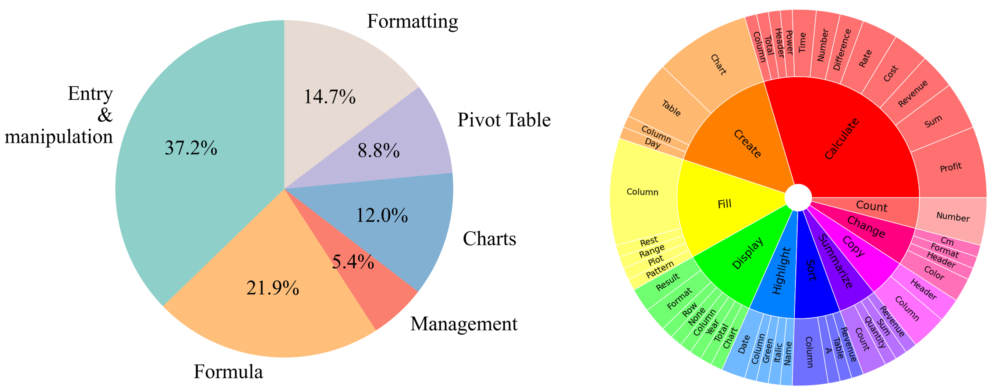
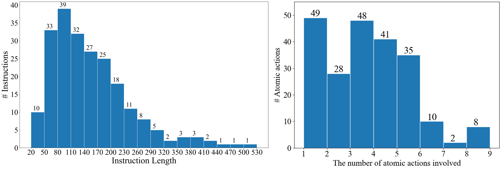

Scaling GUI Grounding with Autonomous Functionality Annotations from LLMs
Hongxin Li1,2*, Jingran Sui3,4*, Jingran Su3,4*, Yuntao Chen3†, Qing Li4, Zhaoxiang Zhang1,2,3,5
1School of Artificial Intelligence, University of Chinese Academy of Sciences (UCAS)
2State Key Laboratory of Multimodal Artificial Intelligence Systems (MAIS), Institute of Automation, Chinese Academy of Sciences
3Centre for Artificial Intelligence and Robotics (CAIR), Hong Kong Institute of Science & Innovation, Chinese Academy of Sciences
4The Hong Kong Polytechnic University
5Shanghai Artificial Intelligence Laboratory
*Equal contribution.
†Corresponding
Abstract
User interface understanding with vision-language models has received much attention due to its potential for enabling next-generation software automation. However, existing UI datasets either only provide large-scale context-free element annotations or more contextualized functional descriptions for elements at a much smaller scale. In this work, we propose the AutoGUI pipeline for automatically annotating UI elements with detailed functionality descriptions at scale. Specifically, we leverage large language models (LLMs) to infer element functionality by comparing the UI source code changes before and after simulated interactions with specific UI elements. We construct an AutoGUI-627k dataset using the proposed pipeline, featuring multi-resolution, multi-device screenshots, diverse data domains, and detailed functionality annotations. Furthermore, we propose a spatially-aware instruction tuning approach for enhancing the grounding ability of UI vision-language models (UI-VLMs). Extensive experimental results demonstrate the superiority of our AutoGUI-627k dataset compared to existing web pre-training methods and the effectiveness of the proposed spatially-aware instruction tuning approach.
AutoGUI Data Samples
AutoGUI: A Scalable Pipeline that Provides Unlimited UI Element Functionality Data

Dataset overview. An overview of our dataset in shown by the wordclouds of the instructions and involved atomic actions. The two clouds show that our dataset contains diverse tasks that involve various spreadsheet operations.

...

Dataset statistics.